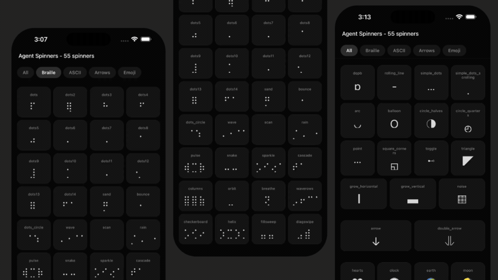

expo-agent-spinners — originally a React Native + Expo library — ported to LynxJS by sharing every byte of frame data, every byte of animation logic, and forking only the 20-line renderer at the JSX boundary.
The bet: when an existing JS-based UI library is small and mostly data-driven, you can share by default and fork only at the rendering boundary — no rewrites, no fork divergence, no per-spinner duplication. The same hook runs on both runtimes via a single build-time alias.
The original. <View>, <Text>, StyleSheet.create(), react-native-safe-area-context. 55 spinner components, each owning its own useState/useEffect/frames.
The port. <view>, <text>, intrinsic elements, dual-thread runtime, CSS strings for styles, className-driven SCSS. One generic Spinner.tsx + 55 thin named exports.
Left: the original Expo recording. Right: the actual Lynx demo app — the same apps/lynx bundle that runs on iOS/Android — rendered in this browser via @lynx-js/web-core.
Recording: expo-agent-spinners.gif (committed)

main.web.bundleReal ReactLynx app running in this browser tab — open standalone ↗
Built by rspeedy build with environments.web = {}. Embedded via <lynx-view url="./main.web.bundle">.
Every line below comes from a numbered decision in docs/LYNX_PORT.md, written before any code. Architecture-doc-first.
src/data/ (55 files){ name, frames, interval, category }. Zero React, zero platform imports. Byte-identical to the original FRAMES arrays.src/hooks/useSpinnerFrame.ts (10 lines)'react'. In the Lynx build, Rspeedy aliases 'react' → '@lynx-js/react'. One file, two runtimes.src/lynx/Spinner.tsx + src/components/spinners/// apps/lynx/lynx.config.ts — the single line that unlocks layer 2. export default defineConfig({ plugins: [pluginReactLynx(), pluginQRCode(...)], resolve: { alias: { react: '@lynx-js/react' }, }, })
These aren't bridgeable by aliasing — they require different JSX and different style value formats. So we fork. But only here.
| Aspect | React Native | Lynx |
|---|---|---|
| Elements | <View>, <Text> (components) | <view>, <text> (intrinsic) |
| Style values | fontSize: 24 (number) | fontSize: '24px' (CSS string) |
| Style composition | style={[obj1, obj2]} | className or flat style |
lineHeight | size * 1.3 (number) | `${size * 1.3}px` (string) |
| Multi-char spinners | — | need white-space: nowrap |
src/components/spinners/dots.tsximport { useEffect, useState } from "react"; import { Text, View } from "react-native"; const FRAMES = ["⠋","⠙","⠹","⠸", ...]; const INTERVAL = 80; export function DotsSpinner({ size = 24, color = "#fff", style }) { const [frame, setFrame] = useState(0); useEffect(() => { const id = setInterval( () => setFrame((i) => (i + 1) % FRAMES.length), INTERVAL); return () => clearInterval(id); }, []); return ( <View style={[{ alignItems: "center" }, style]}> <Text style={{ fontSize: size, color, lineHeight: size * 1.3 }}> {FRAMES[frame]} </Text> </View> ); }
src/lynx/Spinner.tsximport { useSpinnerFrame } from '../hooks/useSpinnerFrame'; import type { SpinnerDefinition } from '../data/types'; export function Spinner({ definition, size = 24, color = '#fff', className }) { const frame = useSpinnerFrame(definition.frames, definition.interval); return ( <view className={className} style={{ alignItems: 'center' }}> <text style={{ fontSize: `${size}px`, color, lineHeight: `${size * 1.3}px`, whiteSpace: 'nowrap', }}> {frame} </text> </view> ); } // + named exports auto-generated from data/ export function DotsSpinner(props) { return <Spinner definition={data.dots} {...props} />; }
Measured by counting actual lines in the Lynx build graph: src/data/ + src/hooks/ are reused identically; src/lynx/ is the only forked code.
Shared between RN and Lynx
data + hook
Lynx-specific renderer
Spinner.tsx + index.tsx
Library code reuse
585 / (585 + 89)
Caveat — the demo app is fork territory. App.tsx (RN, 339 lines, StyleSheet + ScrollView + Pressable) and apps/lynx/src/App.tsx + App.css (97 + 109 lines, <scroll-view> + bindtap + CSS) are intentionally platform-shaped. The 87% figure is for the library, which is what consumers ship.
src/data/, src/hooks/, src/lynx/, apps/lynx/ via create-rspeedy; alias react → @lynx-js/react'react', works on both runtimes.lynx.bundle (80.3 kB), DotsSpinner runs in LynxExplorer<scroll-view> + multi-char direction found only by visual verification
The five US-* commits map 1:1 to the numbered Implementation Order in docs/LYNX_PORT.md. The doc was written first, the commits executed it.
"Slopfork" — quickly forking a JS app into a new runtime by sharing maximally — only works when the harness around the agent enforces discipline. Here's what we used.
LYNX_PORT.md before any code263 lines: three-layer architecture, decision log, risks-and-mitigations table, and a numbered implementation order. The five US-* commits then executed that order 1:1. The doc is the plan.
tasks/prd-lynx-port.md shipped alongside the architecture doc and was deleted only after every US closed (b5db6a7: "Delete completed PRD"). Stories were the unit of work.
Every lynx-port: commit message names a runtime-visible output — bundle size, byte-identity check, "runs in LynxExplorer." Compile-only doesn't count.
lynx-docs MCPFor Lynx-specific design questions (element model, event handling, style format) we dispatched the Explore subagent and pointed it at the lynx-docs MCP server instead of web search. Logged at subagents/agent-af972c4e0da5ddf28.jsonl.
ListResources → ReadResource → llms.txt entrypointFor platform docs (Lynx elements, layout, threading), we used the lynx-docs MCP's llms.txt entrypoint as the canonical index instead of guessing URLs. Faster, no hallucination surface.
From the user's global CLAUDE.md, repeated in the project's CLAUDE.md: "Verify visually in the demo app after every change. pnpm build passing is not sufficient." This caught both post-launch fixes (519ab47, 05b8d51).
Within a story, the agent uses TaskCreate / TaskUpdate to split work into atomic pieces (extract data → write hook → write renderer → wire demo → screenshot). Each marked completed when its artifact lands.
The cleanup commit "remove stale ralph-loop artifacts" confirms the port ran through a Ralph autonomous loop — the agent advanced one US per turn, with the harness blocking stop until the user-defined goal was met (same hook used to ship this very deck).
A repeatable recipe, distilled from this port. Boring is the feature.
'react' → '@lynx-js/react' unlocks the shared hook. Prefer aliasing over abstracting.lynx-docs) for element reference, instead of web-searching.55 spinners · 5 commits · 87% reuse · 0 manual file translations.
Deck source: presentation/index.html · Demo data: presentation/spinners.json (extracted from src/data/)